|
|
NOBILE CONTRADA DELL'AQUILA
- TERZO DI CITTA' -
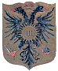
Stemma:
d'oro, all'aquila bicipite nera, linguata di rosso, sormontata da una corona alla reale,
caricata nel petto di un sole raggiante d'oro con le lettere U.I (Umberto I)
d'azzurro e tenente negli artigli lo scettro,la spada e il globo imperiale crociato d'oro.
(Regio Rescritto della Real Casa del 24 aprile 1888)
Testo della Sovrana concessione:
Essa che già adorna i suoi stendardi coll’Aquila imperiale per cesarea concessione, potrà pertanto caricare quest’aquila in petto da una rotella d’oro fiammeggiante e scritta delle sigle U. I in caratteri maiuscoli romani d’azzurro. La rotella dovrà essere circolare e munita alla circonferenza di otto raggi acuti alternati con altrettanti raggi fiammeggianti.
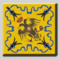
Colori: spiega bandiera gialla oro listata o arabescata di nero e di turchino.

Compagnie di Milizia Urbana: San Pietro in Castelvecchio, Casato di Sopra, Aldobrandino del Mancino.
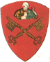
- Sancti Petri Castri Veteris: campus rubeus cum duabus clavibus giallis in cruce cum Sancto Petro cum castro in mano.
- San Pietro in Castelvecchio: campo rosso con due chiavi gialle incrociate con San Pietro con il Castello in mano (nella mano destra, nella sinistra tiene le chiavi).
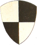
- Casati superioris: ad quarteria albi et nigri sine alio signo.
- Casato di Sopra: [scudo] inquartato di bianco e nero senza altro simbolo.
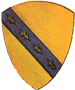
- Aldobrandini del Mancino: campus gialli cum lista azzurri ex transverso cum liliis ad aurum.
- Aldobrandino del Mancino: campo giallo con banda azzurra a traverso con gigli dorati.
Nota: La parola "lista" o "listra" è generica e, in araldica, si distingue con nomi diversi:
quella che attraversa lo scudo dalla destra in alto alla sinistra in basso (il contrario per chi guarda lo scudo) è definita "banda".
quella che, invece, attraversa lo scudo dalla sinistra in alto alla destra in basso (il contrario di chi guarda lo scudo) si definisce "sbarra".
quella che divide lo scudo in due parti in modo trasversale si definisce "fascia".

NOBILE CONTRADA DEL BRUCO
- TERZO DI CAMOLLIA -
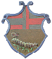
Stemma:
d'oro, al bruco al naturale, su un ramoscello di rosa fiorito e fogliato di verde, sormontato da una corona alla granducale; il capo partito di rosso e di argento alla croce sabauda partita dell'uno all'altro. (Concessione del Re d'Italia Umberto I con Decreto del 9 febbraio 1889)
Testo della Sovrana concessione:
Lo stemma è d’oro al bruco strisciante su di un ramoscello coronato alla granducale il tutto al naturale. La concessione potrebbe essere di un capo partito di rosso e d’argento alla croce dall’uno all’altro e dell’uno nell’altro.
Nota: Il testo è trascritto dalla proposta del Commissario per la Consulta araldica.
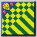
Colori: spiega bandiera gialla e verde in parti uguali listata o arabescata di turchino
Compagnie di Milizia Urbana: San Pietro a Ovile di sotto.
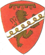
- Sancti Petri ad Ovile inferioris: campus rubeus cum lista ad provencham cum campo albi et cum liliis et rastrello.
- San Pietro a Ovile di sotto: campo rosso con una pervinca in sbarra bianca e con gigli e rastrello (al capo).
Nota: in questa descrizione non si fa nessun riferimento al leone dorato attraversato dalla sbarra con la pervinca. Il leone guarda alla sua sinistra e si definisce "rivoltato".
CONTRADA DELLA CHIOCCIOLA
- TERZO DI CITTA' -
Stemma: d'argento, seminato dalle lettere U e M di azzurro (Umberto I e Margherita di Savoia),
alternate da rosette di Cipro partite di rosso e di bianco, alla chiocciola al naturale passante su manto erboso.
Testo della Sovrana concessione:
Essa che fa per impresa una chiocciola in campo d’argento, avrà pertanto facoltà di spargere il campo stesso delle lettere U. M. maiuscole romane di azzurro, alternate con rose partite di rosso e d’argento, che sono le rose del grand’ordine di Savoia.
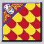
Colori: spiega bandiera rossa e gialla in parti uguali listata o arabescata di turchino.
Compagnie di Milizia Urbana: San Marco, San Quirico, Monistero
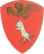
- Sancti Marci: campus rubeus cum branca albi cum Sancto Marco aureo super ea.
- San Marco: campo rosso con branca [di leone] bianca e San Marco d'oro sopra di essa.
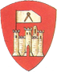
- Sancti Quirici in Castro Veteri: campus rubeus cum castro albi super quo castro sunt sexte.
- San Quirico in Castelvecchio: campo rosso con castello bianco sopra il quale vi sono le seste (il compasso). [Simboleggia le scienze ma anche la giustizia e la sapienza].
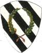
- Monasterii Sancti Eugenii: ad lista albi et nigri cum ghirlanda provenche.
- Monastero di Sant'Eugenio: [campo] a bande bianche e nere con ghirlanda color pervinca.
CONTRADA PRIORA DELLA CIVETTA
- TERZO DI SAN MARTINO -
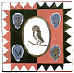
Stemma: d'argento, alla civetta in maestà, posata su un ramo di olivo fruttato, sormontata
da una corona all'antica d'oro,accompagnata da due scudetti d'azzurro, caricati delle lettere U e M d'oro (Umberto I e Margherita di Savoia). (Concessione Sovrana del 9 febbraio 1889)
Testo della Sovrana concessione:
Essa la cui bandiera ha un drappo, partito di rosso e di nero, colla bordatura indentata di rosso e di bianco nel primo punto, e di bianco e di rosso nel secondo, coll’impresa della civetta in cuore e due scudetti in capo a destra ed in punta a sinistra, il primo d’azzurro alla scala d’oro in banda accompagnata in capo ed in punta, da due chiavi dello stessa decussate, l’ingegno all’insù ed all’infuori, il secondo scudetto di azzurro al grifone d’oro, potrà d’ora innanzi aggiungere altri due scudetti, in punta a destra ed in capo a sinistra, pur di azzurro, caricati quello in alto della lettera U, quello in basso della lettera M in maiuscolo romano d’oro.
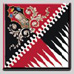
Colori: spiega bandiera rossa e nera in parti uguali listata o arabescata di bianco.
Compagnie di Milizia Urbana:
San Vigilio, San Pietro alle Scale in Banchi, San Cristoforo
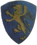
- Sancti Vigilii: campus azzurrus cum grifone croceo et unguibus rubeis.
- San Vigilio: campo azzurro con grifone di color croco (giallo zafferano) e artigli rossi.
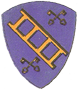
- Sancti Petri scalarum: campus azzurrum cum schala crocea ex transverso et cum quator clavibus croceis in duabus postis.
- San Pietro alle Scale [in Banchi]. Prese l'appellativo di San Pietro in Banchi o San Pietro Buio per distinguerla dalla chiesa di San Pietro alle Scale in Castelvecchio]: campo azzurro con una scala gialla a traverso e con quattro chiavi gialle, due di sopra e due di sotto (alla scala).
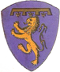
- Sancti Cristofori: campus azzurri cum leone croceo et cum liliis et rastrello a capite.
(Il Registro del Concistoro la descrive nel Terzo di Camollia)
- San Cristoforo: campo azzurro con leone giallo e al capo (dello scudo) il rastrello con i gigli.
(Il Registro del Concistoro la descrive nel Terzo di Camollia)
Nota: Il rastrello, in genere rosso, con i gigli dorati era il simbolo del partito Guelfo.
CONTRADA DEL DRAGO
- TERZO DI CAMOLLIA -
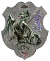
Stemma: d'argento, al drago spiegato di verde, sormontato da una corona all'antica d'oro,
tenente nella branca destra e poggiante sull'ala un pennoncello di azzurro caricato della lettera U d'oro, sormontata dalla corona reale dello stesso.
(Concessione sovrana del 9 febbraio 1889)
Testo Sovrana concessione:
…Ossia l’impresa della contrada riuscirebbe “di un drago di verde, linguale ed armato [unghie e dardo della coda] di rosso, coronato d’oro all’antica, e tenente colla zampa destra, un pennoncello inclinato in sbarra, col drappo d’azzurro alla lettera U romana maiuscola, coronata alla reale, il tutto d’oro”
Nota: Il testo è trascritto dalla proposta del Commissario per la Consulta araldica.
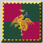
Colori: spiega bandiera rosa antico e verde in parti uguali listata o arabescata di giallo.
Compagnie di Milizia Urbana:
Sant'Egidio, San Donato ai Montanini
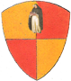
- Sancti Egidii: ad quarterios crocei et rubei cum figura Sancti Ambroxii.
- Sant'Egidio: [campo] inquartato di giallo e di rosso con l'immagine di Sant'Ambrogio (Beato Ambrogio Sansedoni).
Nota: La Contrada del Drago ha sempre presentato questa Compagnia con l'immagine di Sant'Egidio Vescovo con la mitria, il Pastorale e il Vangelo in ricordo della antica chiesa intitolata a questo santo esistente nel territorio. Nel luglio del 2004 la Contrada, a seguito della Delibera assembleare del 24 ottobre 2003, ha sostituito l'immagine di Sant'Egidio con quella del Beato Ambrogio Sansedoni riportando così all'origine quanto era descritto nel documento del Concistoro del 1420.
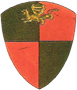
- Sancti Donati iuxta Montaninos: ad quarterios crocei et rubei e desuper draco.
- San Donato ai Montanini: [campo] inquartato di giallo e di rosso e al di sopra un drago.
IMPERIALE CONTRADA DELLA GIRAFFA
- TERZO DI CAMOLLIA -
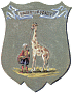
Stemma: d'argento,alla giraffa al naturale,tenuta da un moro vestito alla turca recante uno scudo
di rosso caricato dei simboli imperiali d'oro
(Regio Decreto del 29 maggio 1939); sormontata in capo da un nastro svolazzante d'azzurro caricato della scritta
"UMBERTUS I DEDIT" in lettere romane d'oro, intercalate da due nodi di Savoia dello stesso. (Regio Decreto del 24 aprile 1888)
Testo Sovrana concessione:
Essa che fa per impresa la giraffa avrà pertanto facoltà di aggiungere nel campo in cui la medesima figura, una lista azzurra svolazzante in capo e scritta colla leggenda: “Umbertus I dedit” colle due parole frammezzate da un nodo di Savoia, il tutto d’oro.
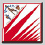
Colori: spiega bandiera rossa e bianca in parti uguali.
Compagnie di Milizia Urbana:
San Pietro a Ovile di Sopra
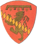
- Sancti Petri ad Ovile superioris: campus rubeus cum leone aureo cum spino argenteo ex transverso per leonem cum liliis et rastrello.
- San Pietro a Ovile di sopra: campo rosso con un leone dorato attraversato in banda da un fusato d'argento e (al capo) il rastrello con i gigli.
CONTRADA SOVRANA DELL'ISTRICE
- TERZO DI CAMOLLIA -
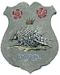
Stemma: d'argento, all'istrice, fermo su un ristretto di terreno al naturale, sormontato da una
corona all'antica d'oro, accompagnato da due rose di rosso (dette di Cipro); alla punta un nodo di Savoia d'azzurro; (Regio Decreto del 9 febbraio 1889)
il capo di rosso alla croce bianca ottagona (del Sovrano Militare Ordine di Malta concessa con Decreto del 12 maggio 1980).
Testo Sovrana concessione del 9 febbraio 1889:
Essa che ha l’istrice per impresa potrà d’ora innanzi accompagnare la figura di quell’animale in capo da due rose rosse dette di Cipro, ed in punta da un nodo di Savoia; talché la nuova insegna araldicamente consisterà d’argento all’istrice fermo sopra un ristretto di terreno al naturale, sormontato da una corona all’antica d’oro ed accompagnato in capo da due rose di rosso ed in punta da un nodo di Savoia d’azzurro.
Testo del Decreto Magistrale di Frà Angelo de Mojana Principe e Gran Maestro del Sovrano Militare Ordine di Malta del 12 maggio 1980:
Art.1- E’ concessa alla Contrada dell’Istrice della Città di Siena di fregiarsi dell’appellativo onorifico di “Sovrana” di talché essa potrà d’ora in poi denominarsi ad ogni effetto “Contrada Sovrana dell’Istrice”.
Art.2- All’arme della medesima Contrada dell’Istrice è concesso il capo di rosso alla croce bianca ottagona, così come appare nell’allegato disegno che forma parte integrante del presente Decreto.
Art.3- Il mantello del Duce della medesima Contrada dell’Istrice potrà esser adornato della bianca croce ottagona, così come appare nell’allegato disegno, anch’esso parte integrante del presente Decreto.
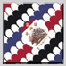
Colori: spiega bandiera bianca listata o arabescata di rosso, di nero e di turchino in parti uguali.
Compagnie di Milizia Urbana: Santo Stefano, San Vincenzo, La Magione, San Bartolomeo
- Sancti Stefani: campus albus cum listra nigra.
- Santo Stefano: campo bianco con banda nera.
- Santi Vincenti: campus rubeus cum lista albi cum dentellis nigri in ea.
- San Vincenzo: campo rosso con banda bianca con dentelli (doppiomerlato) neri in essa.
Nota: La Contrada dell'Istrice, indotta in errore dall'erudito G.Antonio Pecci che, nella sua famosa "Relazione distinta delle Quarantadue Contrade [...]" del 1723, descrisse i dentelli rossi anziché neri (errore ripetuto da Flaminio Rossi ai primi dell'Ottocento), fin dal rinnovo dei costumi del 1878 rappresenta San Vincenzo con il doppiomerlato rosso invece che nero come era in origine alla consegna dei vessilli il 1 luglio 1420 fino al 1555 (ASS, Concistoro 2371).
- Mansionis Templi: campus albi cum lista rubei.
- La Magione: campo bianco con banda rossa.
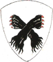
- Sancti Barthalomei: campus albi cum duabus branchis nigris in cruce et ungulis rubeis.
- San Bartolomeo: campo bianco con due branche [di leone] nere incrociate e artigli rossi.
CONTRADA DEL LEOCORNO
- TERZO DI SAN MARTINO -
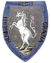
Stemma: d'argento, all'unicorno bianco, inalberato su campagna al naturale; bordura d'azzurro, caricata
della scritta "HUMBERTI REGIS GRATIA" in lettere romane d'oro.
Testo della Sovrana concessione:
Essa che ha per impresa il Leocorno al naturale, movente da un ristretto di terreno, il tutto al naturale, potrà d’ora innanzi assumere una bordatura di azzurro scritta colla divisa, HUMBERTI.REGIS.GRATIA. in maiuscolo romano d’oro.
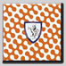
Colori: spiega bandiera bianca e arancio in parti uguali listata o arabescata di turchino.
Compagnie di Milizia Urbana San Giorgio, Pantaneto, Spadaforte
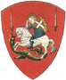
- Sancti Georgii: campus rubeus cum Sancto Georgio equite cum duabus spatis, una ante et alia retro eum.
- San Giorgio: campo rosso con San Giorgio a cavallo [in atto di uccidere il drago] con due spade, una davanti e l'altra dietro di esso.
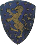
- Pantaneti: campus azzurri et cum leopardo aureo et cum liliis aureis sine numero.
- Pantaneto: campo azzurro con un leopardo dorato e [il campo dello scudo] con innumerevoli gigli dorati.
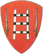
- Spate Fortis: campus rubeus cum scala albi cum petiis nigris et duabus spatis albi in campo.
- Spadaforte: campo rosso con scala bianca con pezze nere e due spade bianche in campo.
CONTRADA DELLA LUPA
- TERZO DI CAMOLLIA -
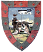
Stemma:
campo di paesaggio al naturale, alla lupa romana bigemina, retroguardante, sormontata
da una corona all'antica d'oro, con i gemelli tenenti un pennoncello troncato di nero e di bianco; bordura composta
d'argento e di rosso, caricata di croci sabaude dell'uno nell'altro. (Concessione con Regio Decreto del 24 aprile 1888)
Testo Sovrana concessione:
Essa che fa per impresa un campo di paesaggio colla lupa coronata all’antica, allattante due bambini uno dei quali tiene ritta un’asta colla fiamma svolazzante troncata di nero e di bianco, il tutto al naturale, avrà pertanto facoltà d’inquadrare la detta impresa colla bordatura composta d’argento e di rosso, ciascun pezzo carico di una crocetta dell’uno nell’altro.
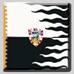
Colori: spiega bandiera bianca e nera in parti uguali listata o arabescata di arancio.
Compagnie di Milizia Urbana: San Donato alla Chiesa, Sant'Andrea
- Sancti Donati iuxta ecclesiam: ad spinos albi et nigri.
- San Donato alla Chiesa: [campo] a losanghe bianche e nere.
- Sancti Andree: campus albus cum leone rubeo coronato.
- Sant'Andrea: campo bianco con un leone rosso coronato.
NOBILE CONTRADA DEL NICCHIO
- TERZO DI SAN MARTINO -
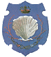
Stemma: di azzurro, alla conchiglia di argento, sormontata da una corona alla granducale, accostata
da due rami di corallo uscenti dall'orecchio della valva, uniti da un pendaglio di tre nodi di Savoia d'oro e due rosette,
l'una di rosso e l'altra d'argento.
Testo Sovrana concessione:
Essa che porta nell’arma un nicchio coronato alla granducale, con due rami di corallo decussati che muovono dall’orecchio della valva dal quale pende una filza di perle di corallo il tutto al naturale, potrà d’ora in poi sostituire la filza di coralli con un pendente formato da tre nodi di Savoia d’oro, divisi da due rose una rosso a destra, l’altra di argento a sinistra.
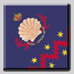
Colori: spiega bandiera turchina listata o arabescata di rosso e di giallo.
Compagnie di Milizia Urbana:
Abbadia nuova di Sopra, Abbadia nuova di Sotto
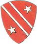
- Abbatie Nove superioris: campus rubeus cum duabus listis albi et cum duabus stellis albi in ditto campo.
- Abbadia Nuova di Sopra: campo rosso con due bande bianche e due stelle bianche nel campo.
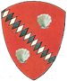
- Abbatie Nove inferioris: campus rubeus cum una lista ad spinos azzurri et albi et duobus nichis albi in dicto campo.
- Abbadia Nuova di Sotto: campo rosso con una banda a fusi accollati azzurri e bianchi alternati e due nicchie bianche nel campo.
Nota: Con il rinnovo dei costumi nel 2000 la Contrada ha corretto l'araldica di questa Compagnia sostituendo i due "rocchi" con due "nicchie". Infatti, in una errata interpretazione del documento del Concistoro del 1420, la parola "nichis" era stata letta come "rochis". E' stato così corretto un errore secolare grazie agli accurati studi di Giovanni Mazzini.
NOBILE CONTRADA DELL'OCA
- TERZO DI CAMOLLIA -
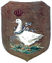
Stemma: d'oro, all'oca al naturale, ferma su zolla erbosa, sormontata da
una corona alla reale, collarinata da un nastro d'azzurro col pendente di una croce di Savoia d'argento, caricata di altra crocetta dello stesso, bordata di rosso.
Testo Sovrana concessione:
Essa che fa per insegna l’oca bianca coronata all’imperiale, ferma su d’una zolla di terreno erboso, avrà pertanto facoltà di coronarla alla reale, collarinata d’azzurro, col pendente di una crocetta d’argento smaltata di altra crocetta di rosso ripiena d’argento, il tutto al naturale.
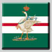
Colori: spiega bandiera verde listata o arabescata di bianco e di rosso.
Compagnie di Milizia Urbana: Sant'Antonio, San Pellegrino
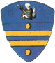
- Sancti Antonii: campus azzurrus cum duabus listis croceis et duabus pallis croceis cum Sancto Antonio desuper.
- Sant'Antonio: campo azzurro con due liste gialle in fascia e due palle (bisanti) gialle con Sant'Antonio al di sopra.
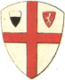
- Sancti Peregrini: campus albus cum croce rubea cum duobus scutis uno ad arma comunis et alio ad arma populi.
- San Pellegrino: campo bianco con croce rossa e due scudi, uno con l'arma del Comune (la Balzana) e l'altro con l'arma del Popolo (leone bianco in campo rosso). Il Registro del Concistoro la descrive nel Terzo di Città.
CAPITANA CONTRADA DELL'ONDA
- TERZO DI CITTA' -
Stemma: nel mare un delfino natante,
sormontato da una corona alla reale d'oro. (Regio Decreto del 9 febbraio 1889)
Testo Sovrana concessione:
Essa che ha suo stemma di un delfino natante nel mare, potrà d’ora innanzi coronare il delfino stesso sul capo e non al di sopra della figura, alla reale.
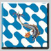
Colori: spiega bandiera bianca e celeste in parti uguali.
Compagnie di Milizia Urbana: Casato di Sotto, San Salvatore
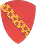
- Casati inferioris: campus rubeus cum lista gialla ex transverso cum stellis rubeis in ea.
- Casato di Sotto: campo rosso con banda gialla a traverso con stelle rosse in essa.
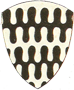
- Sancti Salvatoris: ad undas albi et nigri
- San Salvatore: [campo] a onde bianche e nere.
CONTRADA DELLA PANTERA
- TERZO DI CITTA' -
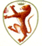
Stemma: d'argento, alla pantera rampante, al naturale, sormontata da una corona all'antica d'oro;
il cantone destro del capo partito di rosso e di bianco, caricato della lettera U fiorita all'avellana,
partita dell'uno nell'altro. (Regio Decreto del 9 febbraio 1889)
Testo Sovrana concessione:
Ha il drappo della bandiera inquartata d’azzurro e di rosso, coll’insegna della pantera in cuore, accantonata da quattro scudetti de’ quali l’ultimo, nel quartier sinistro di punta, è bianco. In questo scudetto potrebbe riporsi il ricordo reale, cioè fallo partito di rosso e di argento, alla lettera U fiorita all’avellana, dall’uno e dall’altro, e dell’uno nell’altro.
Nota: Il testo è trascritto dalla proposta del Commissario per la Consulta araldica.
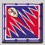 spiega bandiera rossa e azzurra in parti uguali listata o arabescata di bianco.
Compagnie di Milizia Urbana: Stalloreggi di dentro, Stalloreggi di fuori
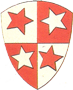
- Stalleregie intus: ad quarterios albi et rubei cum IIII.or stellis duabus rubeis in quarterio albi et duabus albis in quarterio rubei.
- Stalloreggi di dentro: [scudo] inquartato di bianco e di rosso con quattro stelle, due rosse nei quarti bianchi e due bianche nei quarti rossi.
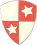
- Stalleregie extra. ad quarterios albi et rubei cum duabus stellis albi in quarterio rubeis.
- Stalloreggi di fuori: [scudo] inquartato di bianco e di rosso con due stelle bianche nei quarti rossi.
CONTRADA DELLA SELVA
- TERZO DI CITTA' -
Stemma: d'argento, al rinoceronte al naturale, passante al piede di una querce nodrita, fogliata di verde,
caricata di arnesi da caccia; il capo di azzurro al sole raggiante d'oro, caricato della lettera U d'azzurro (iniziale di Umberto I).
Testo Sovrana concessione:
Fa per impresa d’argento al rinoceronte fermo sopra un ristretto di terreno, con un albero di nodrito sullo stesso, il tutto al naturale. Il distintivo potrebbe essere di un capo d’azzurro carico di una rotella d’oro fiammeggiante, scritta della lettera U maiuscola romana d’azzurro.
Nota: Il testo è trascritto dalla proposta del Commissario per la Consulta araldica.
Colori: spiega bandiera verde e arancio in parti uguali listata o arabescata di bianco.
Compagnie di Milizia Urbana: Vallepiatta, San Giovanni, Porta Salaia
- Vallis Piatte: campus albi cum rosis rubeis per campum cum banda azzurra cum liliis aureis.
- Vallepiatta: campo bianco seminato di rose rosse con banda azzurra con gigli dorati.
- Sancti Iohannis: campus albus cum lista rubea ad dentellos cum liliis aureis in ea.
- San Giovanni: campo bianco con banda rossa a dentelli e gigli dorati in essa.
- Porte Salarie et Galgarie: campus rubeus cum ianua ad duos arcos cum gallo albo super ea.
- Porta Salaia: campo rosso con una porta a due archi e un gallo bianco sopra di essa.
CONTRADA DELLA TARTUCA
- TERZO DI CITTA' -
Stemma: d'oro, sparso di nodi di Savoia d'azzurro, alternati con fiori di margherita al naturale,
alla tartaruga su base erbosa. (Regio Decreto del 24 aprile 1888)
Testo Sovrana concessione:
Essa che ha per sua impresa consistente in una tartaruga sopra un terreno al naturale avrà pertanto facoltà di dipingere questa sua impresa in un campo d’oro sparso di nodi di Savoia d’azzurro alternati con fiori di margherita al naturale.
Colori: spiega bandiera gialla e turchina in parti uguali.
Compagnie di Milizia Urbana: Porta all'Arco, Sant'Agata
- Porte Arcus: campus rubeus cum cruce alba ex transverso.
- Porta all'Arco: campo rosso con croce bianca a traverso (Croce di Sant'Andrea)
- Sancte Agate: campus rubeus cum cruce alba ex transverso cum Sancta Agata super ea in campo aureo.
- Sant'Agata: campo rosso con croce bianca a traverso (Croce di Sant'Andrea) e sopra di essa Sant'Agata in campo oro (?).
Nota: l'immagine di Sant'Agata è sempre stata rappresentata su campo rosso.
CONTRADA DELLA TORRE
- TERZO DI SAN MARTINO -
Stemma: d'oro, all'elefante, al naturale su base erbosa, con gualdrappa di rosso alla croce
bianca; sostenente una torre quadrata, merlata e cimata da un pennoncello di rosso crociato d'argento. (Regio Decreto del 9 febbraio 1889)
Testo Sovrana concessione:
Essa la cui impresa figura un elefante bianco, che sostiene una torre sul dorso, al naturale, potrà d’ora innanzi fare la gualdrappa in rosso divisata da una croce bianca, cimando la torre con un pennoncello a triangolo di rosso crociato di argento.
Colori: spiega bandiera rosso cremisi listata o arabescata di bianco e di turchino.
Compagnie di Milizia Urbana: Salicotto di Sopra, Salicotto di Sotto, Rialto, San Giusto
- Salicotto superioris: campus rubeus cum lista azzurri et liliis aureis in ea.
- Salicotto di Sopra: campo rosso con fascia azzurra e gigli dorati in essa.
- Salicotti inferioris: campus rubeus cum lista azzurra et tribus rocchis albi.
- Salicotto di Sotto: campo rosso con fascia azzurra e tre rocchi bianchi.
- Realti et Cartaginis: campus albi cum leone rubeo sbarrato cum lista azzurri et liliis ad aurum.
- Rialto: campo bianco con un leone rosso attraversato da una banda azzurra con gigli dorati.
- Sancti Iusti: campus rubeus cum lista ad undis rubei et albi et cum Sancto Iusto desuper.
- San Giusto: campo rosso attraversato in fascia da due ordini di onde rosse (?) e bianche e al di sopra l'immagine di San Giusto.
CONTRADA DI VALDIMONTONE
- TERZO DI SAN MARTINO -
Stemma: d'oro, al montone saliente, sormontato da una corona all'antica d'oro; il cantone destro
d'azzurro caricato della lettera U maiuscola romana d'oro coronata alla reale dello stesso. (Regio Decreto del 9 febbraio 1889)
Testo Sovrana concessione:
Essa che ha per suo stemma d’oro al montone al naturale, rampante e coronato nel campo all’antica, potrà d’ora innanzi aggiungere un canton destro d’azzurro caricato dalla lettera U maiuscola romana caricata alla reale il tutto d’oro.
Colori: spiega bandiera rossa e gialla in parti uguali listata o arabescata di bianco.
Compagnie di Milizia Urbana: Borgo Santa Maria, Sant'Angelo a Montone, San Maurizio (Samoreci)
- Burgi Sancte Marie: campus rubeus cum bove croceo et a capite figura Virginis cum filio in brachiis.
- Borgo Santa Maria: campo rosso con un bove giallo [simbolo di San Luca Evangelista] e al capo l'immagine della Vergine con il figlio nelle braccia.
- Sancti Angeli ad Montonem: campus rubeus cum castro albi cum uno montone albi super eo.
- Sant'Angelo a Montone: campo rosso con un castello bianco e un montone bianco sopra di esso.
- Sancti Mauritii: ad spinos albos et rubeus sine alia signo.
- San Maurizio (Samoreci): [campo] a losanghe di bianco e di rosso senza altro simbolo.
| |